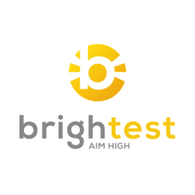
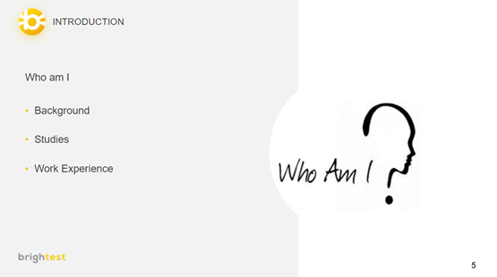
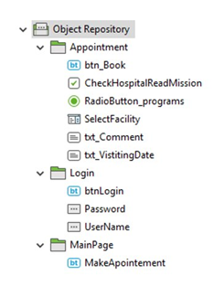
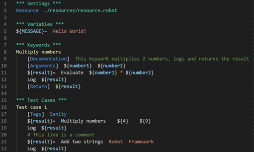
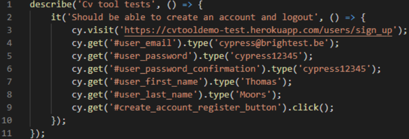
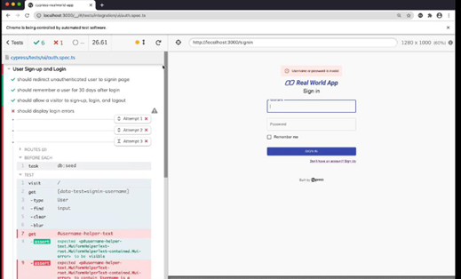
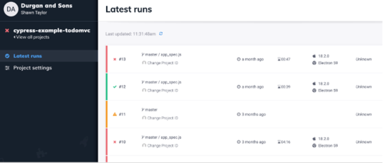
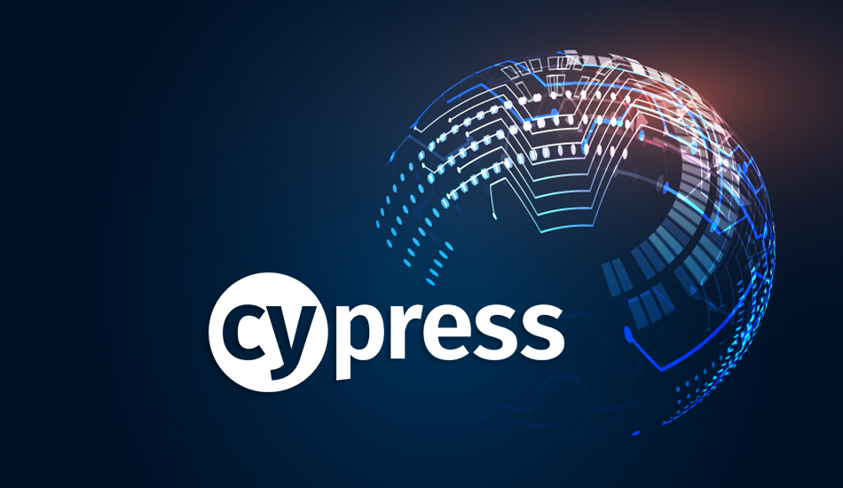

Innovatieroute Digital Quality
In het eerste semester van het derde academiejaar werd elke leerling verplicht een innovatieroute te volgen. Voor studenten met als afstudeerrichting softwaremanagement, zoals ikzelf, werd er gekozen voor Digital Quality. Uit de naam valt af te leiden waarover het zou kunnen gaan, de kwaliteit van software.
De doelstelling van deze activiteit was kennismaken met nieuwe technologieën om automatische softwaretesten te creëren. Mijn eigen doelstelling was om zoveel mogelijk nieuwe kennis te ontwikkelen die later dat semester van pas zou kunnen komen.


Tijdens het IT-project, dat ook in het eerste semester plaatsvond, werd er van de studenten verwacht dat de geschreven code voldoende getest werd. Dit kan natuurlijk op veel manieren, maar één van de vereisten was het ontwikkelen van geautomatiseerde softwaretesten. De innovatieroute was dus een activiteit die kon helpen bij de uitvoering van het IT-project.
De innovatieroute bestond uit drie verschillende delen op drie verschillende dagen. Er kwam voor elk deel een nieuwe spreker langs van het bedrijf Brightest.
Het eerste deel ging over de tool Katalon. De spreker startte met een korte introductie van zichzelf en de tool waarover hij ging vertellen.
De spreker vertelde dat hij vooral ging focussen op testautomatisatie van websites. Om de aandacht van de luisteraars erbij te houden waren er ook opdrachten voorzien. Het was dus de bedoeling dat we ons interactief bezig hielden met de tool. Op deze manier maakten we ook kennis met Katalon en de mogelijkheden ervan. Er werd stap voor stap uitgelegd hoe we met deze tool konden werken en hoe we een project moesten opzetten.


Het doel van het tweede deel van de innovatieroute was kennismaken met de basis van “Robot Framework”. Ook hier wordt er kennisgemaakt met de tool door verschillende oefeningen te maken doorheen de workshop. Robot Framework is een ander concept van testautomatisatie. Het is geen tool op zich, zoals Katalon, maar eerder een framework dat een andere aanpak hanteert voor het creëren van automatische testen.
Als eerste werden alle basisprincipes uitgelegd en aan de hand van oefeningen maakten we kennis met complexere principes.
Ten slotte vertelde Brightest over de tool Cypress. Dit is een zeer handige tool voor het ontwikkelen van testautomatisatie en is eenvoudig te gebruiken. De spreker vertelde hoe deze tool eenvoudig is om op te zetten en hoe er zonder het opzetten van een complexe omgeving testen geschreven kunnen worden. Het verschil met andere soorten testautomatisatie is dat er heel wat objecten moeten worden aangemaakt vooraleer er een test geschreven kan worden. Bij Cypress is dit niet het geval, zoals op de foto hieronder te zien is.
Het schrijven van een test verloopt zeer logisch. Er wordt stap voor stap geschreven wat er van de tool verwacht wordt. Als eerste surft de tool naar een website, vervolgens wordt de e-mail ingevuld,…


De test die hierboven te zien is, is natuurlijk zeer eenvoudig. De spreker lichtte, net zoals bij de andere delen van de innovatieroute, nog heel wat complexere concepten toe, maar ook heel handige functies van Cypress. Zo is er bijvoorbeeld de mogelijkheid om een test te debuggen vanuit de browser. Omdat Cypress zo visueel is, is het eenvoudig om te zien waar de test fout gaat.
Dit is ook handig als rapportering aangezien er na elke run een rapport gegenereerd wordt met de testresultaten. Hierin is dan te zien welke testen al dan niet succesvol waren en nog heel wat andere informatie. Ook is er de mogelijkheid om een video-opname te genereren, waarin duidelijk te zien is wat er precies gebeurt.
Tijdens deze innovatieroute heb ik geprobeerd zo veel mogelijk nieuwe kennis op te pikken in verband met software testing. Ik heb steeds mijn best gedaan om de oefeningen mee te maken en de inhoud te begrijpen, maar dit lukt natuurlijk niet altijd even goed.
De eerste twee delen vond ik persoonlijk iets minder interessant. Dit maakt het natuurlijk moeilijk om aandachtig te luisteren. Bij het derde deel, wat over Cypress ging, was ik heel wat aandachtiger. Ik vond Cypress een aangename tool om mee te werken en ik heb dan ook alle oefeningen mee gemaakt.
Over het algemeen heb ik heel wat bijgeleerd over softwareautomatisatie. Ik heb niet enkel theoretische concepten geleerd, maar ook echt leren werken met de tools. Dit is iets wat ik veel aangenamer vind dan enkel luisteren en kijken hoe iemand iets uitvoert. Het zorgt er ook voor dat je veel aandachtiger meewerkt.

